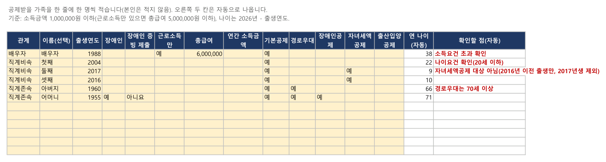
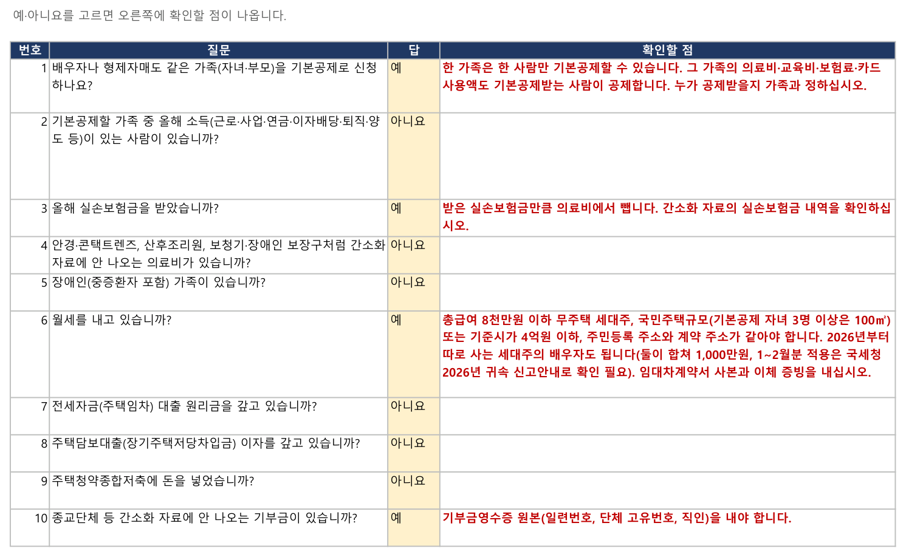
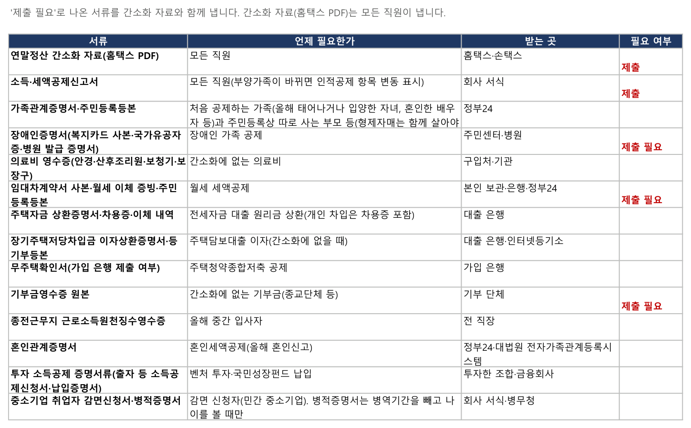

연말정산 사전 점검표 (2026년 귀속)
연말정산 서류를 회사에 내기 전에 공제 요건을 스스로 확인하는 엑셀 점검표입니다. 가족의 출생연도와 소득을 적고 질문에 예·아니요를 고르면, 요건에 걸리는 가족과 따로 낼 서류가 바로 표시됩니다.
참고용 점검표입니다. 세액을 계산하지 않으며 최종 판단은 회사 연말정산 담당자와 국세청 안내를 따릅니다. 입력 내용은 이 파일 안에만 있고 어디로도 보내지지 않습니다.
2026년 귀속 전용, 2026-11 법령 기준입니다. 국세청 2026년 귀속 연말정산 신고안내가 나오면 갱신판을 올립니다.
엑셀 점검표 내려받기 (v2026.11)
2026년 귀속 전용, 2026-11 법령 기준입니다. 국세청 2026년 귀속 연말정산 신고안내가 나오면 갱신판을 올립니다.
엑셀(마이크로소프트 365)과 한셀(한컴오피스 2024)에서 열어 수식 결과를 확인했습니다. 매크로 없이 수식과 목록 고르기만 씁니다. 내려받은 파일이 '보호된 보기'로 열리면 위쪽 [편집 사용]을 눌러야 목록과 자동 확인이 됩니다. 구글 스프레드시트·원드라이브 같은 인터넷 서비스에서 열면 입력 내용이 그 서비스에 저장됩니다.
📝 소개 글: 구글 블로거 - 연말정산 사전 점검표 · 네이버 블로그 · 문의·후기는 블로그 댓글로

쓰는 법
- 1_부양가족: 공제받을 가족을 한 줄에 한 명씩 적습니다. 나이는 출생연도로만 확인하므로 주민번호는 적지 않습니다. '기본공제'를 '예'로 고른 가족에 확인할 점이 나옵니다.
- 2_질문: 질문 20개에 예·아니요를 고르면 '예'인 질문 옆에 확인할 점이 나옵니다.
- 3_제출서류: '제출 필요'로 표시된 서류를 간소화 자료와 함께 회사에 냅니다.
- 4_올해 바뀐 점: 2026년 귀속에 바뀐 공제와 올해로 끝나는 공제를 봅니다.

무엇을 확인하나요
| 기본공제 | 직계비속·입양자 20세 이하(2006.1.1 이후 출생), 직계존속 60세 이상(1966.12.31 이전 출생), 형제자매 20세 이하 또는 60세 이상, 장애인은 나이 제한 없음, 연간 소득금액 100만원 이하(근로소득만 있으면 총급여 500만원 이하) |
|---|---|
| 추가·세액공제 | 경로우대 70세 이상(1956.12.31 이전 출생), 2026년 귀속 자녀세액공제 2016년 이전 출생(나이 기준 9세 이상, 2017년생은 부칙으로 제외) |
| 겹치는 공제 | 배우자·형제자매가 같은 가족을 기본공제하는지, 기본공제받지 않는 쪽이 그 가족의 의료비·보험료·카드 사용액을 넣는지(교육비는 아래 '확인이 더 필요한 항목') |
| 특별공제 | 실손보험금 차감, 간소화에 없는 의료비·기부금 영수증, 부모 교육비, 가족 대학원 교육비, 형제자매 카드 사용액, 가족 명의 정치자금·고향사랑 기부금 |
| 주택자금 | 월세 세액공제, 전세자금 대출 원리금, 주택담보대출 이자, 주택청약종합저축의 요건과 서류 |
| 그 밖 | 중도 입사자의 전 직장 원천징수영수증, 혼인·출산 세액공제, 중소기업 취업자 감면, 투자 소득공제 서류 |

확인이 더 필요한 항목
법은 바뀌었지만 실무 적용을 국세청 2026년 귀속 신고안내로 확인해야 하는 항목입니다. 점검표에도 '확인 필요'로 표시해 두었습니다.
- 자녀세액공제: 2017년생 처리 실무
- 교육비 가족 소득요건 폐지(2026년 지급분부터): 맞벌이 부부의 배우자·자녀 교육비 적용 방식
- 월세 세액공제: 세대주의 배우자 추가공제와 다자녀 100㎡ 기준의 2026년 1~2월 지급분 적용
근거
소득세법·소득세법 시행령, 조세특례제한법·같은 법 시행령(국가법령정보센터 2026-11 현행 조문과 부칙), 국세청 국세상담센터 연말정산 자주 묻는 Q&A. 시트 '4_올해 바뀐 점'에 항목마다 조문을 적었습니다.
면책
개인이 만든 비공식 점검표로 국세청과 관계가 없습니다. 결과는 참고자료이며 정확성·완전성을 보증하지 않습니다. 세액 계산과 공제 여부의 최종 판단은 회사 연말정산 담당자와 국세청 안내를 따르십시오.